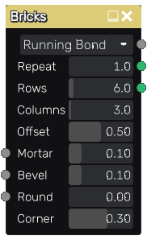

Bricks node¶
The Bricks node outputs 4 related bricks pattern textures that can be used for walls or pavement.
Inputs¶
The Bricks node accepts 3 optional greyscale input maps for the shape mortar, bevel and round parameters (the corresponding parameter is multiplied by the map value).
Outputs¶
The Bricks node provides the following textures:
The first one is a greyscale image where bricks are shown in white and mortar in black.
The second one is a color image where all bricks are drawn using a random uniform color.
The 3rd and 4th textures are greyscale images of the X and Y position of the center of each brick.
The 5th texture is an UV map texture for each brick (and can be used with the CustomUV node to apply a texture on each brick)
the 6th texture is an UV map for each corner of each brick (and can be used with the CustomUV node to apply a texture on each corner)
Those images can be used together to create complex materials that show for example bricks of different colors.
Parameters¶
The Bricks node accepts the following parameters:
the Pattern parameter defines the bricks pattern that will be generated.
the Repeat parameter defines the number of patterns on the horizontal and vertical axes of the texture.
the Rows parameter defines the number of brick rows in a single pattern of the texture.
the Columns parameter defines the number of brick rows in a single pattern of the texture.
the Offset parameter defines the offset of odd rows of the pattern. This parameter only applies to the Running bond patterns.
the Mortar parameter defines the relative thickness of mortar in patterns.
the Bevel parameter defines the relative thickness of brick bevel in patterns.
the Round parameter defines the radius of each round corner.
the Corner parameter defines the size of each corner (for the 6th output texture).
Notes¶
As with all random nodes, the seed is held by the node’s position, so moving the node in the graph will modify the texture, and the outputs will remain the same if its position and parameters are not changed.
Example images¶